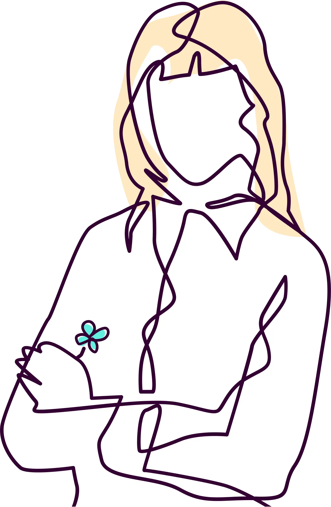

Hello, I'm Lisa.
Senior product designer and digital learning designer in Melbourne. I make complex, regulated systems make sense.
Senior product designer and digital learning designer in Melbourne. I make complex, regulated systems make sense.
Art school, then 20 years in agencies, then product. The visual craft stayed. The problems changed: policy, standards, and dense data models, used by people under real pressure.
Now I design clinical platforms, aged care funding tools, and university learning systems. Work where the rules are real and clarity is non-negotiable.
Postgraduate study in digital learning design taught me the other half: how people learn high-stakes tasks. My units were assessed at High Distinction level, with full marks for an Articulate Rise module and a web analytics case study.
Accessibility is the through-line. AI can close accessibility gaps. Its biases can also quietly widen them. My recent research puts that tension to work, using AI critically for accessible learning.
I exhibit as an artist, sing in a band, and do impro theatre. Impro is the best training there is for workshops and user interviews: listen hard, build on what you're given, stay calm when the scene changes. Bushwalking untangles the rest.
The logo? A four-leaf clover. I find them everywhere.

Thank you for all that you did. You will always be remembered at Monash because your design will be reproduced EVERYWHERE. Thanks for being such an important part of this project. You put your artistry into a dull place, and it is so much better for it. Thank you again.
Aged care offers a steep learning curve to anyone new to healthcare. Lisa has negotiated this and is well on her way to a deeper understanding of our users, our products and the industry. She doesn't shy away from a challenge, as shown by her expanding involvement across both the Clinical Manager and Resident Manager products. She has actively engaged our clients to seek feedback and validation, as evidenced by her work on the admission templates and, more recently, AN-ACC. Lisa has been an invaluable source of expertise, providing input as we shape and build out our DNA-R design system.
Lisa is an outstanding UI/UX designer who has consistently demonstrated exceptional skills. She possesses a unique ability to blend creativity with user-centric design principles. Her designs not only look visually stunning but also prioritise the end user's experience. She has a keen eye for detail and an intuitive understanding of what it takes to create intuitive and user-friendly interfaces. She excels at working within multidisciplinary teams, effectively communicating her design vision and incorporating feedback from various stakeholders. Lisa's enthusiasm and passion for UX design are infectious and inspiring.
Lisa is a very passionate and talented senior UX and UI designer. She is able to effectively apply sound UX techniques and amazing visual design skills to deliver the best solutions. Lisa worked with multiple stakeholders with multiple expectations, effectively navigating that to deliver the best outcomes. Lisa is a highly skilled designer, and any business would be very lucky to have her.
I witnessed her depth of experience and thoughtfulness she brings to her work. She draws confidently on a strong professional background while remaining genuinely open to new ideas, perspectives, and ways of working. Her engagement with new concepts is never superficial. She approached ideas critically, asking thoughtful questions and testing assumptions, while remaining constructive and open-minded. She combines innovation with persistence. Rather than stopping at interesting ideas, she puts in the hard work required to carry them through, refining, iterating, and ultimately getting to the other side with outcomes that are both practical and forward-thinking.
Lisa brings a blend of craft experience, collaboration and dedication. She has an innate ability to understand user needs and translate them into intuitive and seamless experiences. Whether crafting wireframes, conducting research, or prototyping interfaces, she approaches each task with a strong understanding of usability principles. I enjoyed working with her in a complex and constantly changing project environment. I wholeheartedly recommend Lisa Jones for any senior-level UX design role.
Beautiful presentation of distilled thinking. Such excellent layering of LX and UX. What an excellent portfolio piece.
Amazing how you have balanced creativity and practical thinking with deep theoretical reflections... and very succinctly.
Get in touch or find me on LinkedIn.